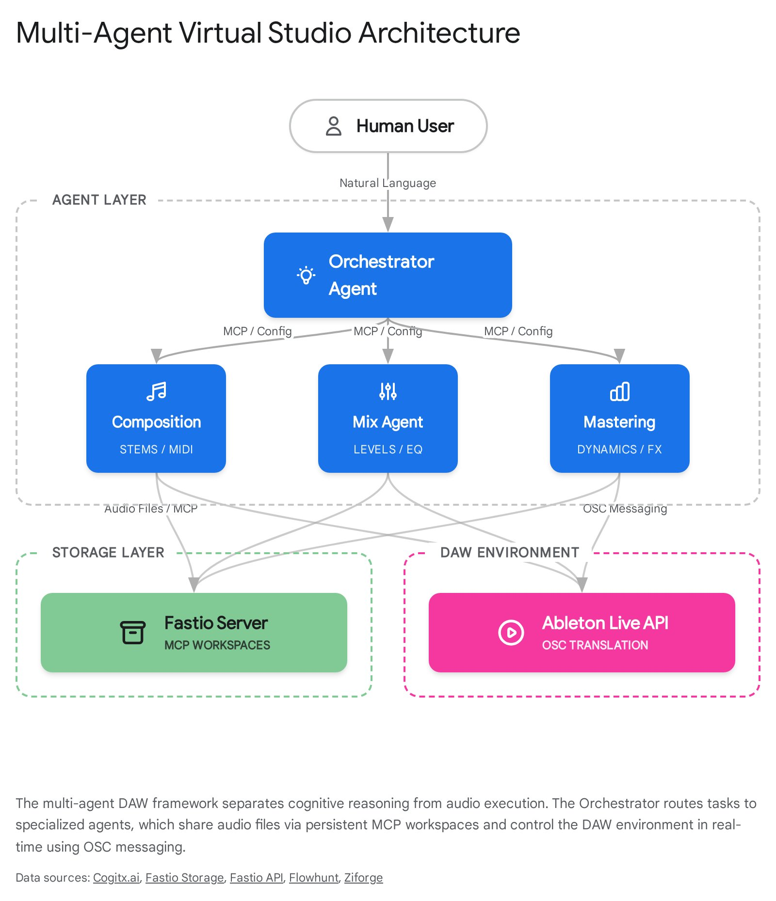
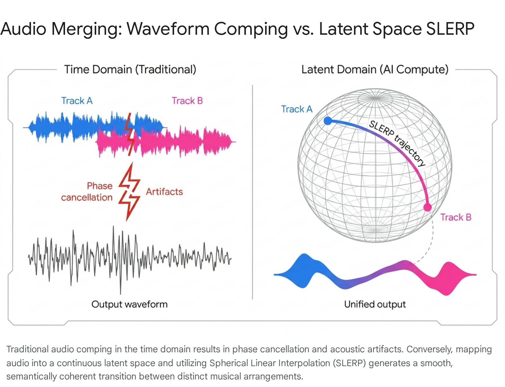

My Take: Why This Matters Right Now
I have been inside the AI music production ecosystem long enough to watch every promised revolution stall at the same bottleneck: the gap between what generative models can produce and what a working producer can actually use. The models are getting extraordinary. The infrastructure around them - the workflow tools, the merging mechanisms, the DAW integration - is still largely stuck in 2019.
The autonomous virtual studio concept changes that equation. Not because it replaces the producer, but because it finally gives the producer an architecture that matches the scale of what these models can do. When you can spawn a Composition Agent, a Mixing Agent, and a Mastering Agent - all operating in parallel, all communicating through a shared MCP workspace, all capable of reaching inside Ableton or Logic via OSC and actually moving faders - you are not automating creativity. You are building a studio that runs at the speed of thought.
"The most exciting thing about this architecture is not what it replaces. It is what it enables. A single producer running a multi-agent virtual studio has more raw production capacity than a mid-tier label from fifteen years ago. That is the scale shift. The question is not whether it is possible. The question is whether producers will learn to direct it before the window closes."
The latent space merging piece - specifically SLERP via EnCodec - is the part I think is most underappreciated. Every producer working with AI-generated audio hits the same wall: you have two great generations that will not connect cleanly. Traditional crossfading destroys them both. SLERP solves this at the model level, generating a semantically coherent bridge rather than a waveform overlap. This is not a feature. It is a fundamental shift in what "editing" AI audio means.
New to the Hybrid Production methodology? Start with What Is Hybrid Production - the foundational framework that contextualises why tools like the autonomous virtual studio matter for working producers. For the economic forces driving this shift, read The Liquid Economy of Sound.
Feasibility Assessment: What Is Actually Possible
Before getting into the architecture, I want to be direct about what is buildable today versus what requires near-term infrastructure. The answer is more encouraging than most producers expect.
The individual components are largely proven. The gap is integration - specifically, building a coherent orchestration layer that handles error states, maintains context across agents, and prevents the cascade failures that multi-agent systems are prone to when one worker stalls. That is a solvable engineering problem, not a research frontier.
The Science: Multi-Agent DAW Architecture
A multi-agent system is a network of autonomous agents, each assigned a specific role, distinct toolset, and explicitly constrained permissions, coordinating to execute tasks that a single generalized model could not efficiently handle. In the context of a DAW, applying a single agent to act simultaneously as a composer, sound designer, mix engineer, and mastering technician inevitably leads to role confusion, degraded reasoning patterns, and poor error recovery.
Multi-agent architecture mirrors the traditional studio ecosystem, distributing cognitive load across specialized virtual personnel each optimized for a distinct function. The two dominant orchestration patterns are the Orchestrator-Worker model and the sequential Pipeline model. In practice, a production system uses both: the Orchestrator-Worker pattern for task delegation and error handling, the Pipeline pattern for the sequential flow of audio through processing stages.
| Agent Role | Primary Function | Model Configuration | Output Artifact |
|---|---|---|---|
| Orchestrator | Goal decomposition, task assignment, state tracking, error handling | High reasoning capacity, low temperature for strict adherence | Workflow YAML configs, API triggers |
| Composition Agent | Melodic generation, rhythm sequencing, stem creation | High creativity, access to generative audio models (MusicGen, Suno) | MIDI sequences, raw .wav stems |
| Mixing Agent | Level balancing, EQ, dynamic range compression | High precision, access to DSP plugins and DAW mixer APIs | Balanced sub-mixes, processed stems |
| Mastering Agent | Final normalization, limiting, loudness targeting | Analytical, reference track metadata access, mastering limiters | Final stereo deliverable |
| Review Agent | Quality control, phase correlation checking, clipping detection | Diagnostic configuration, strong pattern recognition | Error reports, automated rollback triggers |
The critical constraint: the Orchestrator must never execute audio processing itself. Designing the control layer to take on execution tasks consistently creates computational bottlenecks. The Orchestrator's only job is to decompose goals, assign workers, track state, and handle failures. This separation is what makes the system scalable.
When routing composition tasks to symbolic assistants, agents can trigger theory-grounded MIDI co-writers to draft melodic progressions without generating unverified audio stems. For a field analysis of how symbolic models interface with professional DAWs, review our Staccato AI DAW co-writer analysis.

MCP, OSC, and the Language of DAW Control
Inter-agent communication and state management are the primary failure points in any distributed multi-agent system. Agents cannot effectively collaborate on a music track if they cannot share large audio files, project states, and metadata seamlessly. Without persistent memory, the orchestration collapses into redundant work and logical loops.
The Model Context Protocol (MCP) resolves this. It is an open standard that defines how agents invoke external tools and data services - a universal connector layer. For audio production, MCP servers provide the essential infrastructure for shared persistence and programmatic file operations. Agents register for persistent shared workspaces where project files survive agent restarts and context switches. Programmatic file locks prevent data corruption during parallel processing, such as two agents attempting to equalize the same vocal stem simultaneously.
Advanced MCP storage solutions incorporate RAG capabilities, automatically indexing audio file metadata. This allows agents to execute semantic searches - locating specific drum breaks based on textual descriptions, or identifying previous mixes with specific peak dB characteristics. The MCP workspace functions as an intelligent, searchable sample library, not just a file store.
Direct DAW manipulation requires one more layer: Open Sound Control (OSC). While MIDI remains the widely-known standard, it is architecturally frozen in 1983 - 7-bit data resolution (0 - 127), 16-channel maximum, 31.25 kbps bandwidth. OSC was built for modern networks: 32-bit and 64-bit float resolution, URL-style symbolic addressing, 64-bit time-tagging for synchronous bundle execution, and bandwidth limited only by the network hardware.
| Feature | MIDI Protocol | Open Sound Control (OSC) |
|---|---|---|
| Data Resolution | 7-bit (0 - 127 values) | 32-bit or 64-bit float - high precision |
| Addressing | Channel-based (1 - 16) | URL-style: /track/1/volume |
| Bandwidth | 31.25 kbits/sec | Limited only by network hardware (10+ Mbps) |
| Timing | Sequential transmission | 64-bit time tags for synchronous bundles |
| Extensibility | Fixed message types | Open-ended, custom data structures and arrays |
By deploying an MCP Server built on Python remote scripts, the DAW's entire internal API is exposed to the AI agents. The Orchestrator issues natural language commands; the MCP server translates them into OSC messages and Python API calls. A thread-safe, queue-based architecture ensures no race conditions or application crashes during parallel agent operation.
See also: C2PA Music Provenance - how the same MCP-driven file infrastructure applies to cryptographic audio provenance and rights attribution.
The Science: Latent Space Interpolation and SLERP
The second major technical pillar of the autonomous virtual studio is the ability to merge AI-generated audio segments seamlessly - not by overlapping waveforms, but by navigating the mathematical space inside the model itself. This is latent space interpolation, and it is the approach that makes the Suno song combiner concept technically viable.
Models like Meta's EnCodec, Google's MusicVAE, and advanced flow-matching architectures do not process audio as raw amplitude sequences. They use a streaming encoder-decoder architecture to compress audio into a highly structured, lower-dimensional continuous latent space. In this latent space, fundamental musical qualities - timbre, pitch, dynamics, rhythm - are mapped as continuous mathematical vectors rather than discrete audio samples.
The crucial advantage of a well-regularized variational latent space is its structural continuity. Close coordinate inputs correspond to sonically similar outputs, with no "latent holes" that would generate incoherent noise when decoded. Standard VAEs enforce this through regularization using Kullback-Leibler divergence, ensuring the learned distribution stays close to a prior normal distribution and enabling smooth transitions across the space.
When you select a section from Generation A and a section from Generation B, the system encodes both into their respective latent vectors. To merge them, it calculates a trajectory of intermediate latent codes between those two points in multidimensional space - and decodes each intermediate vector into audio. The result is not a crossfade. It is a semantic morph.
The Autonomous Virtual Studio · JRAY, 2026
The formula: given latent vectors z_A and z_B, any intermediate state z_alpha can be computed as z_A + alpha(z_B − z_A), where alpha traverses from 0 to 1. Each intermediate vector is decoded by the neural decoder to generate a completely new waveform bridging the two source materials. If Generation A is a piano melody and Generation B is a brass arrangement, the interpolated bridge synthesizes an intermediate timbre - progressively morphing the harmonic structure from one state to the other.
The Suno song combiner - a direct implementation of this SLERP architecture - is one of the active projects at trustnodelogic.com/projects.
Waveform Comping vs. Latent Compute: Why Traditional Methods Fail
Understanding why SLERP is necessary requires understanding what happens when you try to merge AI-generated audio the traditional way. The failure modes are not subtle - they are acoustically catastrophic.
- Phase relationships between generations are inherently unaligned
- Summing uncorrelated noise floors boosts noise by ~3dB
- Phase cancellation destroys fundamental frequencies at splice points
- Perceptible as clicks, cracks, and jarring transitions
- Linear interpolation cannot account for harmonic or timbral coherence
- Result: musically incoherent regardless of fade length
- Operates on the model's internal mathematical representation
- No raw waveform overlap - generates new audio at each interpolation step
- Preserves harmonic, timbral, and rhythmic coherence through the bridge
- SLERP traces great-circle path - constant rate of change across the manifold
- Avoids low-density latent holes that produce blurry output
- Result: semantically coherent morphing between any two generations
| Method | Mathematical Approach | Acoustic Result | Best Use |
|---|---|---|---|
| Linear Interpolation | Direct straight-line traversal | Can traverse latent holes - blurry or distorted output | Simple, low-dimensional data |
| Nearest Neighbors | Jumps to existing discrete coordinates | Abrupt shifts, adherence to known data points only | Mapping to discrete chords or exact vocabulary |
| SLERP | Great-circle path across latent manifold | Smooth, constant rate of change - preserves acoustic characteristics | High-fidelity audio morphing and track merging |

The Roadmap: How to Build It, Step by Step
This is the section I have been building toward - the actual implementation path. Based on the Gemini Deep Research paper I have been working from, building the autonomous virtual studio and the Suno song combiner app follows four sequential phases.
Open Google Anti-Gravity IDE and create a new project directory. Do not touch the boilerplate manually. Prompt the Orchestrator Agent to generate a strict project rule set - saved as .cursorrules - that defines the exact technology stack, enforces API key security protocols, and explicitly outlines the architectural intent for the entire system.
This is the single most important step. Without explicit boundaries, multi-agent systems generate circular refactors, introduce unapproved dependencies, and overwrite critical config files. The rules file is the contract every subsequent agent operates under.
Next, use the IDE's MCP Store to install server connectors: Firebase MCP for state management and database schemas, and Fastio MCP for large audio file upload, locking, and retrieval during the interpolation process.
Via the Agent Manager (Mission Control), spawn a dedicated Frontend Developer Agent. Issue a detailed natural language prompt describing the exact interface: multiple audio track uploads, waveform visualization for each track, and highlight tools that allow the user to mark specific sections of Track A and Track B for merging.
Anti-Gravity's Artifacts system gives the agent live visual rendering of the React components in an embedded browser. Iterate through text commands - not code edits - until the waveform interface and selection tools are functioning correctly. The agent handles all code changes autonomously.
From Mission Control, spawn a Backend Engineer Agent. Instruct it to implement an audio processing pipeline using Python and audiocraft. The pipeline must receive user-selected audio segments from the frontend, encode them using Meta's EnCodec neural audio codec to extract high-dimensional discrete tokens representing each waveform in continuous latent space.
Explicitly instruct the agent to bypass all time-domain crossfading libraries. The merge mechanism must be a SLERP function implemented via scipy or torch - tracing a great-circle path across the latent manifold between the two encoded vectors. The interpolated latent vectors are then fed back through the EnCodec decoder to reconstruct the merged audio waveform.
Deploy a dedicated Integration Agent via Agent Manager. Its job: ensure that the Python backend API endpoints properly consume the timestamp JSON payloads sent by the frontend's section highlight tool. The contract between frontend selection and backend processing must be airtight.
Anti-Gravity's agents then autonomously run end-to-end tests using the integrated browser and terminal - verifying that audio passes through the encoder, interpolates via SLERP without mathematical errors, and renders the merged track correctly in the UI. If agents encounter memory limits, tensor dimension mismatches, or dependency conflicts, they read the terminal errors, adjust their plan, and refactor autonomously. No manual debugging required.
The .cursorrules file is not optional boilerplate. In practice, skipping it or leaving it vague is the single most common reason multi-agent builds collapse into circular refactors or dependency chaos after the first few agent interactions. Write it with the same precision you would write a technical spec. It is the constitution the entire build operates under.
import torch from audiocraft.models import EncodecModel # Initialize EnCodec encoder/decoder model = EncodecModel.encodec_model_24khz() model.set_target_bandwidth(6.0) def slerp(z_a, z_b, alpha): # Spherical linear interpolation between two latent vectors z_a_norm = z_a / z_a.norm(dim=-1, keepdim=True) z_b_norm = z_b / z_b.norm(dim=-1, keepdim=True) omega = torch.acos((z_a_norm * z_b_norm).sum(dim=-1, keepdim=True).clamp(-1, 1)) return (torch.sin((1 - alpha) * omega) / torch.sin(omega)) * z_a \ + (torch.sin(alpha * omega) / torch.sin(omega)) * z_b def merge_audio(audio_a, audio_b, steps=16): # Encode both segments into latent vectors z_a = model.encode(audio_a)[0] z_b = model.encode(audio_b)[0] # Generate interpolated latent frames frames = [] for i in range(steps): alpha = i / (steps - 1) z_interp = slerp(z_a, z_b, alpha) frames.append(z_interp) # Decode interpolated latent trajectory back to audio merged = model.decode(torch.stack(frames)) return merged
What This Means for the Future of Production
The intersection of multi-agent AI and neural audio codecs has fundamentally expanded the technical boundaries of music production - not in some speculative future, but right now, with available tools. The autonomous virtual studio is not a concept. It is an architecture waiting for the right producer to implement it.
By leveraging OSC and MCP together, virtual agents transcend traditional chatbot limitations and gain the ability to directly manipulate complex DAW environments like Ableton Live. By implementing SLERP via variational autoencoders like EnCodec, the long-standing acoustic challenge of generative audio merging is solved - abandoning destructive waveform splicing in favor of cohesive, mathematical semantic morphing. And by using agent-first environments like Google's Anti-Gravity IDE, a single developer can architect, orchestrate, and deploy these highly complex, multi-layered audio applications at unprecedented velocity.
What I am building with the Suno song combiner is a direct implementation of this architecture - a tool that lets producers select the best sections from multiple AI generations and merge them not with a crossfade, but with a SLERP bridge through latent space. The step-by-step roadmap above is the exact path I am following. Start with the .cursorrules file. Everything else depends on getting that foundation right.
The producer of the next decade will not be someone who fights AI or ignores it. It will be someone who understands the architecture well enough to direct it - who knows when to let the agents run and when to intervene, and who can navigate the latent space of a model as intuitively as they navigate a mixer.
Justin Ray (JRAY) · The Autonomous Virtual Studio, 2026
The Liquid Ear (LNNs)
Liquid neural networks and continuous-time adaptive feedback in dynamic mixing and mastering.
Future of Hybrid Manifesto
Moving from black-box AI generators to multi-agent DAW orchestration and human-machine synthesis.
Drawing the Line: Authorship
Copyright thresholds, substantial human authorship criteria, and prompt-to-DAW hybrid workflows.